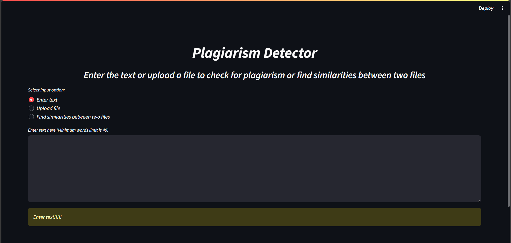

Plagiarism Detection Tool with Streamlit and AWS S3
In today’s digital age, ensuring content originality is essential. Whether you’re a student, researcher, or content creator, plagiarism detection tools play a vital role in upholding integrity. This article explores the development of a Plagiarism Detector built with Streamlit, Natural Language Processing (NLP) techniques, and AWS S3 for secure file storage.

A snapshot of the Plagiarism Detector interface.
Key Features
- Flexible Input Options: Users can enter text manually or upload a .docx, .pdf, or .txt file.
- Sentence Tokenization: The tool splits text into sentences for detailed comparison.
- Web Search for Similar Content: Retrieves URLs from Google search results.
- Cosine Similarity Analysis: Measures similarity between uploaded content and online sources.
- AWS S3 Integration: Securely stores files in an AWS S3 bucket.
- Clickable URL Results: Plagiarism check results include clickable URLs.